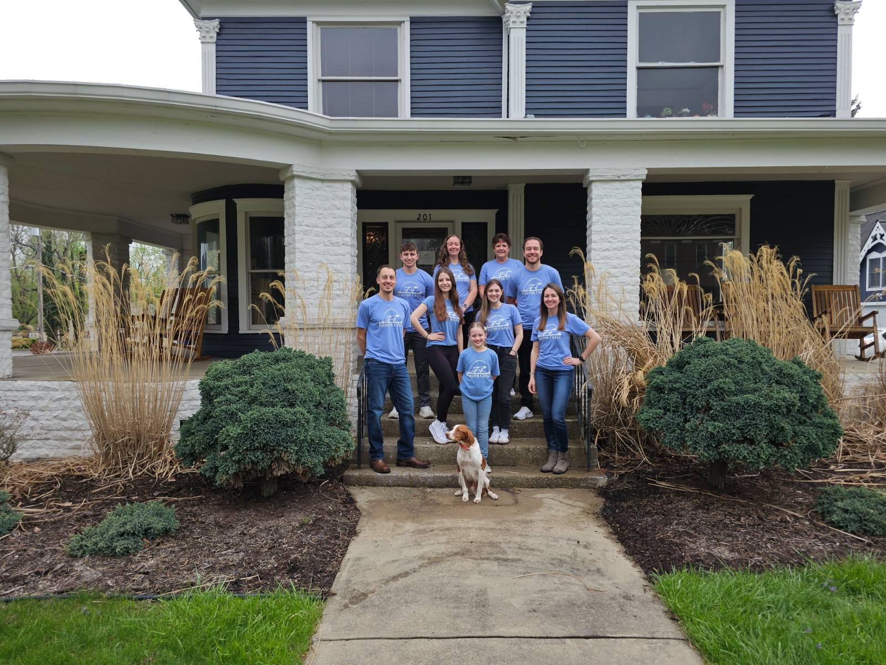

Our Story
Pointer Creek Wealth Management is a financial solutions firm providing private wealth management and fee-based CFP® practitioner planning to high-net-worth investors.
We go against the grain of Wall Street, which is constantly chasing growth in accounts, advisors, and offices. We’ve pledged to stay small and specialized — a branch office of Cambridge Investment Research, Inc., a broker-dealer that shares our belief in remaining privately held.
Marketing as a CFP®-only practice avoids the conflicts that come from non-fiduciary advisors in the same firm, and lets us say plainly what we believe is best for your money: a well-executed plan, backed by low-fee wealth management strategies built entirely on academic research — not opinions, market timing, or buzzwords.
Our tagline, “See the unseen,” means exactly what it says: we show you the unseen of the financial world without you having to search for it yourself. Our commitment is to stay a small firm of real people, operating on a first-name basis.